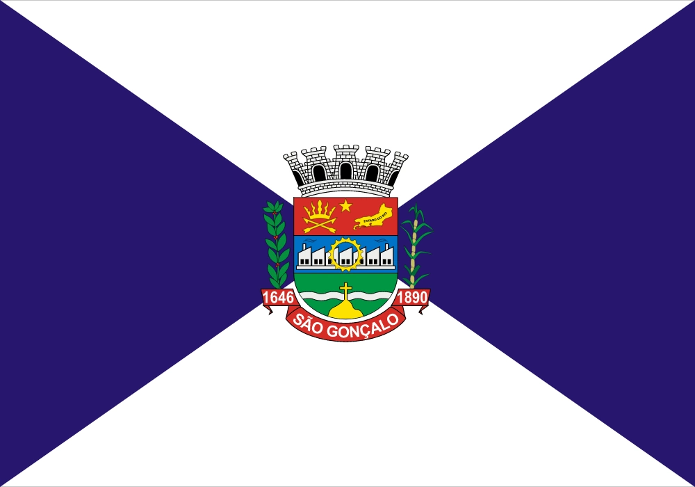
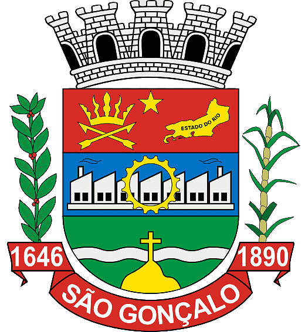

Hino Oficial de São Gonçalo
São Gonçalo, cidade mui singela
Erguida nos encantos de aquarela,
Namorada de nós os gonçalense…
Cidade que cresce dia-a-dia,
Monumental eternal, sol de alegria,
Orgulho bem maior dos fluminenses…
Teu passado, cidade, foi honroso,
Teu futuro será maravilhoso,
E o teu presente fúlgida verdade…
Teu povo sempre ordeiro e liberal
Semeia no teu seio maternal
As propícias sementes da bondade…
Tens usinas com muitas chaminés
Que logo dizem prontas quem tu és;
Oficina onde bate rijo o malho…
Macedo, Palmier, eis o talento,
Estephânia, ó que grande monumento,
Eis homens fortes, prontos ao trabalho…
Tens igrejas festivas, cujos sinos
Bimbalham puros sons, bem cristalinos,
Da cidade fazendo pompa e glória…
Em Neves, Alcântara ou Gradim,
Certamente esta graça tu tens sim,
A graça que engalana a tua história…
(Estribilho)
Letra: Prof. Geraldo Pereira Lemos
Música: Maestro Joyleno dos Santos
Música: Maestro Joyleno dos Santos
0:00
/
4:32